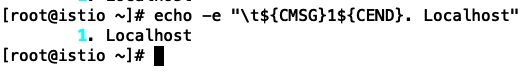
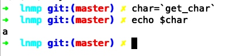
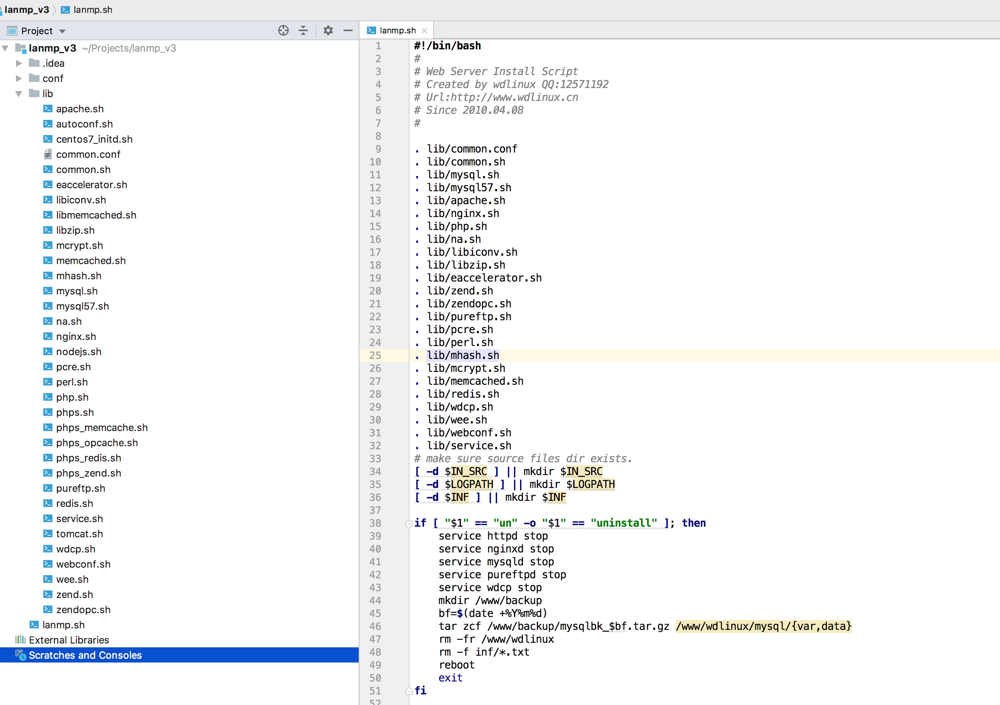

通过分析这个lnmp一键安装包的shell脚本，可以了解下shell语言如何有条理的组织大量的代码
项目地址：https://github.com/oneinstack/lnmp
shell脚本在执行运维和自动化任务时经常用到，在解决服务器问题时非常有用
目录结构
| 目录 | 作用 |
|---|---|
| config | nginx服务器里的预定义配置文件 |
| include | 执行实际安装任务的函数定义 |
| src | 下载的源码存放的目录 |
| tools | 执行数据库备份等任务的小工具合集 |
| 根目录 | 入口文件存放目录、安装入口文件install.sh、卸载入口文件uninstall.sh等 |
初始化过程分析
export PATH=/sbin:/bin:/usr/sbin:/usr/bin:/usr/local/sbin:/usr/local/bin
clear
printf "
#######################################################################
# OneinStack for CentOS/RedHat 6+ Debian 8+ and Ubuntu 14+ #
# For more information please visit https://oneinstack.com #
#######################################################################
"
# Check if user is root
[ $(id -u) != "0" ] && { echo "${CFAILURE}Error: You must be root to run this script${CEND}"; exit 1; }
oneinstack_dir=$(dirname "`readlink -f $0`")
pushd ${oneinstack_dir} > /dev/null
. ./versions.txt
. ./options.conf
. ./include/color.sh
. ./include/check_os.sh
. ./include/check_dir.sh
. ./include/download.sh
. ./include/get_char.sh
- 先使用export将系统常用的系统命令目录加入PATH，确保PATH的稳定
- 使用$(id -u)要求执行命令的用户需要是root用户，root的id为0
- 使用pushd把当前工作目录压入目录栈，方便进行目录切换
- 从versions.txt中加载软件版本的别名，比如：php73_ver=7.3.7，使用变量php73_ver就可以代表7.3.7这个详细的版本号了
- 加载安装的配置信息，比如php安装的位置：php_install_dir=/usr/local/php，可以按需修改
- ./include/color.sh为输出的文字着色，比如：
echo -e "\t${CMSG}1${CEND}. Localhost" - ./include/check_os.sh检查操作系统类型和版本，比如Centos、Ubuntu、Debian
- ./include/check_dir.sh检查mysql和nginx安装目录
- ./include/download.sh下载文件工具函数
- ./include/get_char.sh定义get_char函数，用来接收一个字符的输入
echo -e "\t${CMSG}1${CEND}. Localhost" 效果如下

get_char效果如下

启动流程分析
解析命令行参数
TEMP=`getopt -o hvV --long help,version,nginx_option:,apache_option:,apache_mode_option:,apache_mpm_option:,php_option:,mphp_ver:,mphp_addons,phpcache_option:,php_extensions:,tomcat_option:,jdk_option:,db_option:,dbrootpwd:,dbinstallmethod:,pureftpd,redis,memcached,phpmyadmin,hhvm,python,ssh_port:,iptables,reboot -- "$@" 2>/dev/null`
[ $? != 0 ] && echo "${CWARNING}ERROR: unknown argument! ${CEND}" && Show_Help && exit 1
eval set -- "${TEMP}"
while :; do
[ -z "$1" ] && break;
case "$1" in
-h|--help)
Show_Help; exit 0
;;
-v|-V|--version)
version; exit 0
;;
--python)
python_flag=y; shift 1
;;
...
...
--ssh_port)
ssh_port=$2; shift 2
;;
--iptables)
iptables_flag=y; shift 1
;;
--reboot)
reboot_flag=y; shift 1
;;
--)
shift
;;
*)
echo "${CWARNING}ERROR: unknown argument! ${CEND}" && Show_Help && exit 1
;;
esac
done
这样解析后，比如执行"install.sh --version"后就可以直接查看lnmp的版本了
获取安装选项
比如安装php的选项获取如下
# choice php
while :; do echo
read -e -p "Do you want to install PHP? [y/n]: " php_flag
if [[ ! ${php_flag} =~ ^[y,n]$ ]]; then
echo "${CWARNING}input error! Please only input 'y' or 'n'${CEND}"
else
if [ "${php_flag}" == 'y' ]; then
[ -e "${php_install_dir}/bin/phpize" ] && { echo "${CWARNING}PHP already installed! ${CEND}"; unset php_option; break; }
while :; do echo
echo 'Please select a version of the PHP:'
echo -e "\t${CMSG}1${CEND}. Install php-5.3"
echo -e "\t${CMSG}2${CEND}. Install php-5.4"
echo -e "\t${CMSG}3${CEND}. Install php-5.5"
echo -e "\t${CMSG}4${CEND}. Install php-5.6"
echo -e "\t${CMSG}5${CEND}. Install php-7.0"
echo -e "\t${CMSG}6${CEND}. Install php-7.1"
echo -e "\t${CMSG}7${CEND}. Install php-7.2"
echo -e "\t${CMSG}8${CEND}. Install php-7.3"
read -e -p "Please input a number:(Default 5 press Enter) " php_option
php_option=${php_option:-5}
if [[ ! ${php_option} =~ ^[1-8]$ ]]; then
echo "${CWARNING}input error! Please only input number 1~8${CEND}"
else
break
fi
done
fi
break
fi
done
然后保存到变量中
安装三方包
if [ ! -e ~/.oneinstack ]; then
# Check binary dependencies packages
. ./include/check_sw.sh
case "${OS}" in
"CentOS")
installDepsCentOS 2>&1 | tee ${oneinstack_dir}/install.log
. include/init_CentOS.sh 2>&1 | tee -a ${oneinstack_dir}/install.log
;;
"Debian")
installDepsDebian 2>&1 | tee ${oneinstack_dir}/install.log
. include/init_Debian.sh 2>&1 | tee -a ${oneinstack_dir}/install.log
;;
"Ubuntu")
installDepsUbuntu 2>&1 | tee ${oneinstack_dir}/install.log
. include/init_Ubuntu.sh 2>&1 | tee -a ${oneinstack_dir}/install.log
;;
esac
# Install dependencies from source package
installDepsBySrc 2>&1 | tee -a ${oneinstack_dir}/install.log
fi
可以看到通过OS变量进行了系统类型的判断
安装软件
比如安装apache
# Apache
if [ "${apache_option}" == '1' ]; then
. include/apache-2.4.sh
Install_Apache24 2>&1 | tee -a ${oneinstack_dir}/install.log
elif [ "${apache_option}" == '2' ]; then
. include/apache-2.2.sh
Install_Apache22 2>&1 | tee -a ${oneinstack_dir}/install.log
fi
先从include目录中加载安装apache的函数，然后执行这个函数
具体安装逻辑
Install_Apache24() {
pushd ${oneinstack_dir}/src > /dev/null
tar xzf pcre-${pcre_ver}.tar.gz
pushd pcre-${pcre_ver} > /dev/null
./configure
make -j ${THREAD} && make install
popd > /dev/null
id -u ${run_user} >/dev/null 2>&1
[ $? -ne 0 ] && useradd -M -s /sbin/nologin ${run_user}
tar xzf httpd-${apache24_ver}.tar.gz
tar xzf apr-${apr_ver}.tar.gz
tar xzf apr-util-${apr_util_ver}.tar.gz
# install nghttp2
if [ ! -e "/usr/local/lib/libnghttp2.so" ]; then
tar xzf nghttp2-${nghttp2_ver}.tar.gz
pushd nghttp2-${nghttp2_ver} > /dev/null
./configure
make -j ${THREAD} && make install
popd > /dev/null
[ -z "`grep /usr/local/lib /etc/ld.so.conf.d/*.conf`" ] && echo '/usr/local/lib' > /etc/ld.so.conf.d/local.conf
ldconfig
rm -rf nghttp2-${nghttp2_ver}
fi
pushd httpd-${apache24_ver} > /dev/null
[ ! -d "${apache_install_dir}" ] && mkdir -p ${apache_install_dir}
/bin/cp -R ../apr-${apr_ver} ./srclib/apr
/bin/cp -R ../apr-util-${apr_util_ver} ./srclib/apr-util
LDFLAGS=-ldl ./configure --prefix=${apache_install_dir} --enable-mpms-shared=all --with-pcre --with-included-apr --enable-headers --enable-mime-magic --enable-deflate --enable-proxy --enable-so --enable-dav --enable-rewrite --enable-remoteip --enable-expires --enable-static-support --enable-suexec --enable-mods-shared=most --enable-nonportable-atomics=yes --enable-ssl --with-ssl=${openssl_install_dir} --enable-http2 --with-nghttp2=/usr/local
make -j ${THREAD} && make install
popd > /dev/null
unset LDFLAGS
if [ -e "${apache_install_dir}/bin/httpd" ]; then
echo "${CSUCCESS}Apache installed successfully! ${CEND}"
rm -rf httpd-${apache24_ver} pcre-${pcre_ver} apr-${apr_ver} apr-util-${apr_util_ver}
else
rm -rf ${apache_install_dir}
echo "${CFAILURE}Apache install failed, Please contact the author! ${CEND}"
kill -9 $$
fi
[ -z "`grep ^'export PATH=' /etc/profile`" ] && echo "export PATH=${apache_install_dir}/bin:\$PATH" >> /etc/profile
[ -n "`grep ^'export PATH=' /etc/profile`" -a -z "`grep ${apache_install_dir} /etc/profile`" ] && sed -i "s@^export PATH=\(.*\)@export PATH=${apache_install_dir}/bin:\1@" /etc/profile
. /etc/profile
if [ -e /bin/systemctl ]; then
/bin/cp ../init.d/httpd.service /lib/systemd/system/
sed -i "s@/usr/local/apache@${apache_install_dir}@g" /lib/systemd/system/httpd.service
systemctl enable httpd
else
/bin/cp ${apache_install_dir}/bin/apachectl /etc/init.d/httpd
sed -i '2a # chkconfig: - 85 15' /etc/init.d/httpd
sed -i '3a # description: Apache is a World Wide Web server. It is used to serve' /etc/init.d/httpd
chmod +x /etc/init.d/httpd
[ "${PM}" == 'yum' ] && { chkconfig --add httpd; chkconfig httpd on; }
[ "${PM}" == 'apt-get' ] && update-rc.d httpd defaults
fi
sed -i "s@^User daemon@User ${run_user}@" ${apache_install_dir}/conf/httpd.conf
sed -i "s@^Group daemon@Group ${run_user}@" ${apache_install_dir}/conf/httpd.conf
if [[ ! ${nginx_option} =~ ^[1-3]$ ]] && [ ! -e "${web_install_dir}/sbin/nginx" ]; then
sed -i 's/^#ServerName www.example.com:80/ServerName 0.0.0.0:80/' ${apache_install_dir}/conf/httpd.conf
TMP_PORT=80
elif [[ ${nginx_option} =~ ^[1-3]$ ]] || [ -e "${web_install_dir}/sbin/nginx" ]; then
sed -i 's/^#ServerName www.example.com:80/ServerName 127.0.0.1:88/' ${apache_install_dir}/conf/httpd.conf
sed -i 's@^Listen.*@Listen 127.0.0.1:88@' ${apache_install_dir}/conf/httpd.conf
TMP_PORT=88
fi
sed -i "s@AddType\(.*\)Z@AddType\1Z\n AddType application/x-httpd-php .php .phtml\n AddType application/x-httpd-php-source .phps@" ${apache_install_dir}/conf/httpd.conf
sed -i "s@#AddHandler cgi-script .cgi@AddHandler cgi-script .cgi .pl@" ${apache_install_dir}/conf/httpd.conf
sed -ri 's@^#(LoadModule.*mod_proxy.so)@\1@' ${apache_install_dir}/conf/httpd.conf
sed -ri 's@^#(LoadModule.*mod_proxy_fcgi.so)@\1@' ${apache_install_dir}/conf/httpd.conf
sed -ri 's@^#(LoadModule.*mod_suexec.so)@\1@' ${apache_install_dir}/conf/httpd.conf
sed -ri 's@^#(LoadModule.*mod_vhost_alias.so)@\1@' ${apache_install_dir}/conf/httpd.conf
sed -ri 's@^#(LoadModule.*mod_rewrite.so)@\1@' ${apache_install_dir}/conf/httpd.conf
sed -ri 's@^#(LoadModule.*mod_deflate.so)@\1@' ${apache_install_dir}/conf/httpd.conf
sed -ri 's@^#(LoadModule.*mod_expires.so)@\1@' ${apache_install_dir}/conf/httpd.conf
sed -ri 's@^#(LoadModule.*mod_ssl.so)@\1@' ${apache_install_dir}/conf/httpd.conf
sed -ri 's@^#(LoadModule.*mod_http2.so)@\1@' ${apache_install_dir}/conf/httpd.conf
sed -i 's@DirectoryIndex index.html@DirectoryIndex index.html index.php@' ${apache_install_dir}/conf/httpd.conf
sed -i "s@^DocumentRoot.*@DocumentRoot \"${wwwroot_dir}/default\"@" ${apache_install_dir}/conf/httpd.conf
sed -i "s@^<Directory \"${apache_install_dir}/htdocs\">@<Directory \"${wwwroot_dir}/default\">@" ${apache_install_dir}/conf/httpd.conf
sed -i "s@^#Include conf/extra/httpd-mpm.conf@Include conf/extra/httpd-mpm.conf@" ${apache_install_dir}/conf/httpd.conf
if [ "${apache_mpm_option}" == '2' ]; then
sed -ri 's@^(LoadModule.*mod_mpm_event.so)@#\1@' ${apache_install_dir}/conf/httpd.conf
sed -i 's@^#LoadModule mpm_prefork_module@LoadModule mpm_prefork_module@' ${apache_install_dir}/conf/httpd.conf
elif [ "${apache_mpm_option}" == '3' ]; then
sed -ri 's@^(LoadModule.*mod_mpm_event.so)@#\1@' ${apache_install_dir}/conf/httpd.conf
sed -i 's@^#LoadModule mpm_worker_module@LoadModule mpm_worker_module@' ${apache_install_dir}/conf/httpd.conf
fi
#logrotate apache log
cat > /etc/logrotate.d/apache << EOF
${wwwlogs_dir}/*apache.log {
daily
rotate 5
missingok
dateext
compress
notifempty
sharedscripts
postrotate
[ -e /var/run/httpd.pid ] && kill -USR1 \`cat /var/run/httpd.pid\`
endscript
}
EOF
mkdir ${apache_install_dir}/conf/vhost
[ "${apache_mode_option}" != '2' ] && Apache_fcgi=$(echo -e "<Files ~ (\\.user.ini|\\.htaccess|\\.git|\\.svn|\\.project|LICENSE|README.md)\$>\n Order allow,deny\n Deny from all\n </Files>\n <FilesMatch \\.php\$>\n SetHandler \"proxy:unix:/dev/shm/php-cgi.sock|fcgi://localhost\"\n </FilesMatch>")
cat > ${apache_install_dir}/conf/vhost/0.conf << EOF
<VirtualHost *:$TMP_PORT>
ServerAdmin admin@example.com
DocumentRoot "${wwwroot_dir}/default"
ServerName 127.0.0.1
ErrorLog "${wwwlogs_dir}/error_apache.log"
CustomLog "${wwwlogs_dir}/access_apache.log" common
<Files ~ (\.user.ini|\.htaccess|\.git|\.svn|\.project|LICENSE|README.md)\$>
Order allow,deny
Deny from all
</Files>
${Apache_fcgi}
<Directory "${wwwroot_dir}/default">
SetOutputFilter DEFLATE
Options FollowSymLinks ExecCGI
Require all granted
AllowOverride All
Order allow,deny
Allow from all
DirectoryIndex index.html index.php
</Directory>
<Location /server-status>
SetHandler server-status
Order Deny,Allow
Deny from all
Allow from 127.0.0.1
</Location>
</VirtualHost>
EOF
cat >> ${apache_install_dir}/conf/httpd.conf <<EOF
<IfModule mod_headers.c>
AddOutputFilterByType DEFLATE text/html text/plain text/css text/xml text/javascript
<FilesMatch "\.(js|css|html|htm|png|jpg|swf|pdf|shtml|xml|flv|gif|ico|jpeg)\$">
RequestHeader edit "If-None-Match" "^(.*)-gzip(.*)\$" "\$1\$2"
Header edit "ETag" "^(.*)-gzip(.*)\$" "\$1\$2"
</FilesMatch>
DeflateCompressionLevel 6
SetOutputFilter DEFLATE
</IfModule>
ProtocolsHonorOrder On
PidFile /var/run/httpd.pid
ServerTokens ProductOnly
ServerSignature Off
Include conf/vhost/*.conf
EOF
[ "${nginx_option}" == '4' -a ! -e "${web_install_dir}/sbin/nginx" ] && echo 'Protocols h2 http/1.1' >> ${apache_install_dir}/conf/httpd.conf
if [ "${nginx_option}" != '4' -o -e "${web_install_dir}/sbin/nginx" ]; then
cat > ${apache_install_dir}/conf/extra/httpd-remoteip.conf << EOF
LoadModule remoteip_module modules/mod_remoteip.so
RemoteIPHeader X-Forwarded-For
RemoteIPInternalProxy 127.0.0.1
EOF
sed -i "s@Include conf/extra/httpd-mpm.conf@Include conf/extra/httpd-mpm.conf\nInclude conf/extra/httpd-remoteip.conf@" ${apache_install_dir}/conf/httpd.conf
sed -i "s@LogFormat \"%h %l@LogFormat \"%h %a %l@g" ${apache_install_dir}/conf/httpd.conf
fi
ldconfig
service httpd start
popd > /dev/null
}
主要步骤如下
- 安装依赖库比如pcre等
- 新建运行的user并分配login为nologin
- 安装apache主体程序
- 环境变量PATH中添加apache软件的bin目录
- 安装service，优先使用systemd的service，其次传统的service
- 修改apache默认的运行配置文件，做适当的优化
- apache相关软件的配置，比如lograte日志轮转的配置等
- 刷新动态连接库
ldconfig - 启动apache服务service httpd start
整体流程如上，可以看到还是非常清晰的
横向对比：lanmp_v3
下载地址：http://dl.wdlinux.cn/files/lanmp_v3.tar.gz

可以看到lanmp_v3结构更简单，conf目录包含service和nginx的配置模板，lib包含执行安装任务的函数，lanmp.sh入口文件